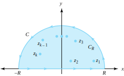

\(\lim\limits_{R \to \infty}\int_{-R}^{R}x\,dx = \lim\limits_{R \to \infty}[\frac{R^2}{2}-\frac{(-R)^2}{2}] = 0\text{,}\) but Equation (8.3.1) tells us that the improper integral of \(f(x) = x\) over \((-\infty ,\infty)\) doesn’t exist. Therefore we can use Equation (8.3.2) to extend the notion of the value of an improper integral, as Definition 8.3.2 indicates.
Section 8.3 Improper Integrals of Rational Functions
An important application of the theory of residues is the evaluation of certain types of improper integrals. We let \(f\) be a continuous function of the real variable \(x\) on the interval \(0 \le x \lt \infty\text{.}\) Recall from calculus that the improper integral \(f\) over \([0,\infty)\) is defined by
\begin{equation*}
\int_0^{\infty}f(x)\,dx=\lim\limits_{b \to \infty} \int_0^{b}f(x)\,dx\text{,}
\end{equation*}
provided the limit exists. If \(f\) is defined for all real \(x\text{,}\) then the integral of \(f\) over \((-\infty ,\infty)\) is defined by
\begin{equation}
\int_{-\infty}^{\infty}f(x)\,dx = \lim_{a \to -\infty}\int_{a}^{0}f(x)\,dx + \lim_{b \to \infty}\int_0^{b}f(x)\,dx\text{,}\tag{8.3.1}
\end{equation}
provided both limits exist. If the integral in Equation (8.3.1) exists, we can obtain its value by taking a single limit:
\begin{equation}
\int_{-\infty}^{\infty}f(x)\,dx = \lim_{R \to \infty}\int_{-R}^{R}f(x)\,dx\text{.}\tag{8.3.2}
\end{equation}
The following example shows that, for some functions, the limit on the right side of Equation (8.3.2) exists, but the limit on the right side of Equation (8.3.1) doesn’t exist.
Example 8.3.1.
Definition 8.3.2. Cauchy principal value.
Let \(f(x)\) be a continuous real-valued function for all \(x\text{.}\) The Cauchy principal value (P.V.) of the integral \(\int_{-\infty}^{\infty}f(x)\,dx\) is defined by
\begin{equation*}
\text{ P.V. } \int_{-\infty}^{\infty}f(x)\,dx = \lim\limits_{R \to \infty}\int_{-R}^{R}f(x)\,dx\text{,}
\end{equation*}
provided the limit exists.
Example 8.3.1 showed that P.V. \(\int_{-\infty}^{\infty}x\,dx=0\text{.}\)
Example 8.3.3.
The Cauchy principal value of \(\int_{-\infty}^{\infty}\frac{1}{x^2+1}\,dx\) is
\begin{align*}
\text{ P.V. } \int_{-\infty}^{\infty}\frac{1}{x^2+1}dx \amp = \lim\limits_{R \to \infty}\int_{-R}^{R}\frac{1}{x^2+1}dx\\
\amp = \lim\limits_{R \to \infty}\big[\mathrm{Arctan}(R)-\mathrm{Arctan}(-R)\big]\\
\amp = \frac{\pi}{2}-\left(-\frac{\pi}{2}\right)\\
\amp = \pi\text{.}
\end{align*}
If \(f(x) =\frac{P(x)}{Q(x)}\text{,}\) where \(P\) and \(Q\) are polynomials, then \(f\) is called a rational function. In calculus you probably learned techniques for integrating certain types of rational functions. We now show how to use the residue theorem to obtain the Cauchy principal value of the integral of \(f\) over \((-\infty,\infty)\text{.}\)
Theorem 8.3.4.
Let \(f(z) =\frac{P(z)}{ Q(z)}\text{,}\) where \(P\) and \(Q\) are polynomials of degree \(m\) and \(n\text{,}\) respectively. If \(Q(x) \ne 0\) for all real \(x\) and \(n\ge m+2\text{,}\) then
\begin{equation*}
\text{ P.V. } \int_{-\infty}^{\infty}\frac{P(x)}{Q(x)}\,dx = 2\pi i\sum\limits_{j=1}^k\mathrm{Res}\left[\frac{P}{Q},z_j\right]\text{,}
\end{equation*}
where \(z_1\text{,}\) \(z_2\text{,}\) \(\ldots\text{,}\) \(z_{k-1}\text{,}\) \(z_k\) are the poles of \(\frac{P}{Q}\) that lie in the upper half-plane. The situation is illustrated in Figure 8.3.5.

Proof.
There are a finite number of poles of \(\frac{P}{Q}\) that lie in the upper half-plane, so we can find a real number \(R\) such that the poles all lie inside the contour \(C\text{,}\) which consists of the segment \(-R \le x \le R\) of the \(x\)-axis and the upper semicircle \(C_R\) of radius \(R\) shown in Figure 8.3.5. By properties of integrals,
\begin{equation*}
\int_{-R}^{R}\frac{P(x)}{Q(x)}\,dx = \int_{C}\frac{P(z)}{Q(z)}\,dz - \int_{C_R}\frac{P(z)}{Q(z)}\,dz\text{.}
\end{equation*}
Using the residue theorem, we rewrite this equation as
\begin{equation}
\int_{-R}^{R}\frac{P(x)}{Q(x)}\,dx = 2\pi i\sum_{j=1}^k\mathrm{Res}\left[\frac{P}{Q},z_j\right] -\int_{C_R}\frac{P(z)}{Q(z)}\,dz\text{.}\tag{8.3.3}
\end{equation}
Our proof will be complete if we can show that \(\int_{C_R}\frac{P(z)}{Q(z)}\,dz\) tends to zero as \(R \to \infty\text{.}\) Suppose that
\begin{align*}
P(z) \amp = a_{m}z^{m}+a_{m-1}z^{m-1} + \cdots +a_1z + a_0, \text{ and }\\
Q(z) \amp = b_nz^n+b_{n-1}z^{n-1} + \cdots + b_1z + b_0\text{.}
\end{align*}
Then
\begin{equation*}
\frac{zP(z)}{Q(z)} = \frac{z^{m+1}(a_{m} + a_{m-1}z^{-1}+\cdots + a_1z^{-m+1}+a_0z^{-m})}{z^n(b_n + b_{n-1}z^{-1} + \cdots + b_1z^{-n+1}+b_0z^{-n})}\text{,}
\end{equation*}
so
\begin{align*}
\lim_{|z| \to \infty}\frac{zP(z)}{Q(z)} \amp = \lim_{|z| \to \infty}\frac{z^{m+1}(a_{m}+a_{m-1}z^{-1} + \cdots + a_1z^{-m+1}+a_0z^{-m})}{z^n(b_n+b_{n-1}z^{-1} + \cdots + b_1z^{-n+1}+b_0z^{-n})}\\
\amp = \left(\lim_{|z| \to \infty}\frac{z^{m+1}}{z^n}\right) \left(\lim_{|z| \to \infty}\frac{a_{m}+a_{m-1}z^{-1} + \cdots + a_1z^{-m+1}+a_0z^{-m}}{b_n+b_{n-1}z^{-1} + \cdots +b_1z^{-n+1}+b_0z^{-n}}\right)\text{.}
\end{align*}
Since \(n \ge m+2\text{,}\) this limit reduces to \(0(\frac{a_{m}}{b_n}) =0\text{.}\) Therefore, for any \(\varepsilon >0\text{,}\) we may choose \(R\) large enough so that \(|\frac{zP(z)}{Q(z)}| \lt \frac{\varepsilon}{\pi}\) whenever \(z\) lies on \(C_R\text{.}\) But this means that
\begin{equation}
\left|\frac{P(z)}{Q(z)}\right| \lt \frac{\varepsilon}{\pi |z|} = \frac{\varepsilon}{\pi R}\tag{8.3.4}
\end{equation}
whenever \(z\) lies on \(C_R\text{.}\) Using the ML inequality (Theorem 6.2.19) and Inequality (8.3.4), we get
\begin{equation*}
\left|\int_{C_R}\frac{P(z)}{Q(z)}\,dz\right| \le \int_{C_R}\frac{\varepsilon}{\pi R}\,|dz| = \frac{\varepsilon}{\pi R}\pi R=\varepsilon\text{.}
\end{equation*}
Since \(\varepsilon >0\) was arbitrary, we conclude that
\begin{equation}
\lim_{R \to \infty}\int_{C_R}\frac{P(z)}{Q(z)}\,dz=0\text{.}\tag{8.3.5}
\end{equation}
Example 8.3.6.
Evaluate \(\int_{-\infty}^{\infty}\frac{1}{(x^2+1)(x^2+4)}\,dx\text{.}\)
Solution.
We write the integrand as \(f(z) =\frac{1}{(z+i) (z-i) (z+2i) (z-2i)}\text{.}\) We see that \(f\) has simple poles at the points \(i\) and \(2i\) in the upper half-plane. Computing the residues, we obtain
\begin{equation*}
\mathrm{Res}[f,i] = -\frac{i}{6}, \text{ and } \mathrm{Res}[f,2i] = \frac{i}{12}\text{.}
\end{equation*}
Using Theorem 8.3.4, we conclude that
\begin{equation*}
\int_{-\infty}^{\infty}\frac{1}{(x^2+1)(x^2+4)}\,dx = 2\pi i\left(-\frac{i}{6}+\frac{i}{12}\right) = \frac{\pi}{6}
\end{equation*}
Example 8.3.7.
Evaluate \(\int_{-\infty}^{\infty}\frac{dx}{(x^2+4)^3}\text{.}\)
Solution.
The integrand \(f(z) =\frac{1}{(z^2+4)^3}\) has a pole of order \(3\) at the point \(2i\text{,}\) which is the only singularity of \(f\) in the upper half-plane. Computing the residue, we get
\begin{align*}
\mathrm{Res}[f,2i] \amp = \frac{1}{2}\lim\limits_{z \to 2i}\frac{d^2}{dz^2}\left[\frac{1}{(z+2i)^3}\right]\\
\amp = \frac{1}{2}\lim_{z \to 2i}\frac{d}{dz}\left[\frac{-3}{(z+2i)^4}\right]\\
\amp = \frac{1}{2}\lim\limits_{z \to 2i}\left[\frac{12}{(z+2i)^5}\right]\\
\amp = -\frac{3i}{512}\text{.}
\end{align*}
Therefore, \(\displaystyle \int_{-\infty}^{\infty}\frac{1}{(x^2+4)^3}\,dx = 2\pi i\left(\frac{-3i}{512}\right) = \frac{3\pi}{256}\text{.}\)
Exercises Exercises
Use residues to evaluate the following integrals:
1.
\(\int_{-\infty}^{\infty}\frac{x^2}{(x^2+16)^2}\,dx\text{.}\)
Solution.
\(\frac{\pi}{8}\text{.}\)
2.
\(\int_{-\infty}^{\infty}\frac{1}{x^2+16}\,dx\text{.}\)
3.
\(\int_{-\infty}^{\infty}\frac{x}{(x^2+9)^2}\,dx\text{.}\)
Solution.
\(0\text{.}\)
4.
\(\int_{-\infty}^{\infty}\frac{x+3}{(x^2+9)^2}\,dx\text{.}\)
5.
\(\int_{-\infty}^{\infty}\frac{2x^2+3}{(x^2+9)^2}\,dx\text{.}\)
Solution.
\(\frac{7\pi}{18}\text{.}\)
6.
\(\int_{-\infty}^{\infty}\frac{1}{x^4+4}\,dx\text{.}\)
7.
\(\int_{-\infty}^{\infty}\frac{x^2}{x^4+4}\,dx\text{.}\)
Solution.
\(\frac{\pi}{9}\text{.}\)
8.
\(\int_{-\infty}^{\infty}\frac{x^2}{(x^2+4)^3}\,dx\text{.}\)
9.
\(\int_{-\infty}^{\infty}\frac{1}{(x^2+1)^2(x^2+4)}\,dx\text{.}\)
Solution.
\(\frac{\pi}{9}\text{.}\)
10.
\(\int_{-\infty}^{\infty}\frac{x+2}{(x^2+4)(x^2+9)}\,dx\text{.}\)
11.
\(\int_{-\infty}^{\infty}\frac{3x^2+2}{(x^2+4)(x^2+9)}\,dx\text{.}\)
Solution.
\(\frac{2\pi}{3}\text{.}\)
12.
\(\int_{-\infty}^{\infty}\frac{1}{x^{6}+1}\,dx\text{.}\)
13.
\(\int_{-\infty}^{\infty}\frac{x^4}{x^{6}+1}\,dx\text{.}\)
Solution.
\(\frac{2\pi}{3}\text{.}\)
14.
\(\int_{-\infty}^{\infty}\frac{1}{(x^2+a^2)(x^2+b^2)}\,dx\text{,}\) where \(a>0\) and \(b>0\text{.}\)
15.
\(\int_{-\infty}^{\infty}\frac{x^2}{(x^2+a^2)^3}\,dx\text{,}\) where \(a>0\text{.}\)
Solution.
\(\frac{\pi}{8a^3}\text{.}\)